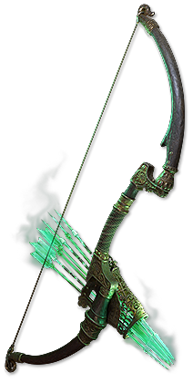
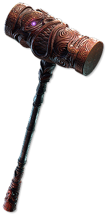
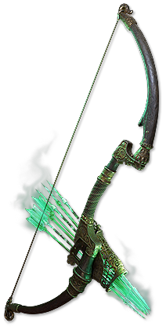
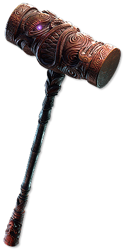

Unique Item Art
Item drop rates cannot be found in the game files, thus we cannot confirm if uniques listed on this page are
actually available in-game.
Unique stash tab contents
Amulet
Astramentis
Beacon of Azis
Carnage Heart
Choir of the Storm
Defiance of Destiny
Eye of Chayula
Fireflower
Fixation of Yix
Idol of Uldurn
Igniferis
Ligurium Talisman
Revered Resin
Rondel of Fragility
Serpent's Egg
Stone of Lazhwar
Strugglescream
Surefooted Sigil
The Anvil
The Everlasting Gaze
The Pandemonius
Ungil's Harmony
Xoph's Blood
Yoke of Suffering
Belt
Bijouborne
Birthright Buckle
Byrnabas
Coward's Legacy
Goregirdle
Headhunter
Infernoclasp
Ingenuity
Keelhaul
Meginord's Girdle
Midnight Braid
Ryslatha's Coil
Shavronne's Satchel
Soul Tether
The Gnashing Sash
Waistgate
Zerphi's Genesis
Body Armour
Apron of Emiran
Ashrend
Belly of the Beast
Bitterbloom
Blackbraid
Bramblejack
Briskwrap
Bristleboar
Cloak of Defiance
Cloak of Flame
Coat of Red
Couture of Crimson
Doryani's Prototype
Dustbloom
Edyrn's Tusks
Enfolding Dawn
Foxshade
Ghostwrithe
Gloamgown
Gloomform
Greed's Embrace
Husk of Dreams
Hyrri's Ire
Icetomb
Irongrasp
Kaom's Heart
Kingsguard
Morior Invictus
Necromantle
Pariah's Embrace
Perfidy
Pragmatism
Prayers for Rain
Quatl's Molt
Queen of the Forest
Redflare Conduit
Sacrosanctum
Sands of Silk
Sierran Inheritance
Silks of Veneration
Skin of the Loyal
Soul Mantle
Tabula Rasa
Temporalis
Tetzlapokal's Desire
The Barrow Dweller
The Black Doubt
The Brass Dome
The Coming Calamity
The Covenant
The Dancing Mirage
The Fallen Formation
The Mutable Star
The Rat Cage
The Road Warrior
Titanrot Cataphract
Vis Mortis
Voll's Protector
Wandering Reliquary
Waveshaper
Widow's Reign
Yriel's Fostering
Zerphi's Serape
Boots
Ab Aeterno
Beetlebite
Birth of Fury
Bones of Ullr
Briarpatch
Bushwhack
Corpsewade
Darkray Vectors
Gamblesprint
Ghostmarch
Legionstride
Luminous Pace
Obern's Bastion
Powertread
The Infinite Pursuit
The Knight-errant
Thunderstep
Trampletoe
Wake of Destruction
Wanderlust
Windscream
Wondertrap
Bow
Death's Harp
Doomfletch
Lioneye's Glare
Quill Rain
Slivertongue
Splinterheart
Voltaxic Rift
Widowhail
Charm
Arakaali's Gift
Beira's Anguish
Breath of the Mountains
For Utopia
Forsaken Bangle
Nascent Hope
Ngamahu's Chosen
Rite of Passage
Sanguis Heroum
The Black Cat
The Fall of the Axe
Valako's Roar
Crossbow
Mist Whisper
Rampart Raptor
The Last Lament
Flask
Melting Maelstrom
Olroth's Resolve
Focus
Apep's Supremacy
Carrion Call
Deathrattle
Effigy of Cruelty
Rathpith Globe
Serpent's Lesson
The Eternal Spark
Threaded Light
Gloves
Aerisvane's Wings
Atziri's Acuity
Aurseize
Blessed Bonds
Blueflame Bracers
Candlemaker
Death Articulated
Deathblow
Demon Stitcher
Doedre's Tenure
Dreadfist
Empire's Grasp
Essentia Sanguis
Gravebind
Grip of Winter
Hand of Wisdom and Action
Hateforge
Idle Hands
Jarngreipr
Killjoy
Kitoko's Current
Leopold's Applause
Lochtonial Caress
Maligaro's Virtuosity
Nightscale
Northpaw
Painter's Servant
Plaguefinger
Shackles of the Wretched
Sine Aequo
Snakebite
The Prisoner's Manacles
Treefingers
Valako's Vice
Helmet
Alpha's Howl
Assailum
Atsak's Sight
Atziri's Disdain
Black Sun Crest
Blood Price
Bronzebeard
Constricting Command
Cornathaum
Corona of the Red Sun
Crown of Eyes
Crown of Thorns
Crown of the Pale King
Crown of the Victor
Deidbell
Elevore
Erian's Cobble
Ezomyte Peak
Forbidden Gaze
Glimpse of Chaos
Goldrim
Greymake
Heatshiver
Horns of Bynden
Indigon
Innsmouth
Ironride
Keeper of the Arc
Leer Cast
Mask of the Sanguimancer
Mask of the Stitched Demon
Mind of the Council
Myris Uxor
Radiant Grief
Sandstorm Visage
Scold's Bridle
Solus Ipse
Starkonja's Head
The Black Insignia
The Bringer of Rain
The Deepest Tower
The Devouring Diadem
The Hollow Mask
The Smiling Knight
The Three Dragons
The Vertex
The Vile Knight
Thrillsteel
Veil of the Night
Visage of Ayah
Wings of Caelyn
Jewel
Against the Darkness
Controlled Metamorphosis
From Nothing
Grand Spectrum
Grand Spectrum
Grand Spectrum
Heroic Tragedy
Megalomaniac
Prism of Belief
The Adorned
Mace
Brain Rattler
Brynhand's Mark
Chober Chaber
Frostbreath
Hoghunt
Hrimnor's Hymn
Mjölner
Nebuloch
Olrovasara
Quecholli
Sculpted Suffering
Seeing Stars
Shyaba
The Empty Roar
The Hammer of Faith
Tidebreaker
Trenchtimbre
Trephina
Wylund's Stake
Quarterstaff
Collapsing Horizon
Matsya
Nazir's Judgement
Pillar of the Caged God
The Blood Thorn
The Sentry
Quiver
Asphyxia's Wrath
Beyond Reach
Blackgleam
Cadiro's Gambit
Murkshaft
Rearguard
The Lethal Draw
Ring
Andvarius
Blackflame
Blackheart
Blistering Bond
Bursting Decay
Call of the Brotherhood
Cracklecreep
Death Rush
Doedre's Damning
Dream Fragments
Evergrasping Ring
Gifts from Above
Glowswarm
Heartbound Loop
Icefang Orbit
Kalandra's Touch
Levinstone
Ming's Heart
Original Sin
Perandus Seal
Polcirkeln
Prized Pain
Seed of Cataclysm
Sekhema's Resolve
Sekhema's Resolve
Sekhema's Resolve
Snakepit
The Burrower
Thief's Torment
Venopuncture
Ventor's Gamble
Vigilant View
Whisper of the Brotherhood
Sceptre
Font of Power
Guiding Palm
Guiding Palm
Guiding Palm
Guiding Palm of the Eye
Guiding Palm of the Heart
Guiding Palm of the Mind
Palm of the Dreamer
Sacred Flame
The Dark Defiler
Shield
Alkem Eira
Arvil's Wheel
Bloodbarrier
Calgyra's Arc
Chernobog's Pillar
Crest of Ardura
Dionadair
Doomgate
Dunkelhalt
Feathered Fortress
Lycosidae
Mahuxotl's Machination
Merit of Service
Nocturne
Oaksworn
Prism Guardian
Redblade Banner
Rise of the Phoenix
Rondel de Ezo
Saffell's Frame
Silverthorne
Sunsplinter
Svalinn
The Surrender
The Wailing Wall
Window to Paradise
Wulfsbane
Spear
Chainsting
Daevata's Wind
Saitha's Spear
Skysliver
Spire of Ire
Splinter of Lorrata
Tangletongue
Tyranny's Grip
Staff
Dusk Vigil
Earthbound
Sire of Shards
Taryn's Shiver
The Burden of Shadows
The Searing Touch
The Whispering Ice
Wand
Adonia's Ego
Cursecarver
Enezun's Charge
Lifesprig
Sanguine Diviner
The Wicked Quill
Other item art with 'unique' in the file name:


 



Possible unique names not listed above:
DO NOT USE
A Father's Love
Abberath's Hooves
Abberath's Horn
Abhorrent Interrogation
Abyssus
Acton's Nightmare
Actum
Adrienne, the Lich Born
Advancing Fortress
Aegis Aurora
Agnerod
Agnerod East
Agnerod North
Agnerod South
Agnerod West
Ahkeli's Meadow
Ahkeli's Mountain
Ahkeli's Valley
Ahn's Contempt
Ahn's Heritage
Ahn's Might
Ailment Durations
Al Dhih
Alberon's Warpath
Algor Mortis
Allelopathy
Allure
Altered Distant Memory
Amanamu's Gaze
Ambu's Charge
Amplification Rod
Anathema
Anatomical Knowledge
Ancestral Vision
Ancient Skull
Ancient Waystones
Angler's Plait
Annihilation's Approach
Apep's Rage
Apep's Slumber
Apex Mode
Apparitions
Arakaali's Fang
Araku Tiki
Arborix
Architect's Hand
Archive Cache
Arimagius' Honour
Arn's Anguish
Ascent From Flesh
Asenath's Chant
Asenath's Gentle Touch
Asenath's Mark
Ashcaller
Ashes of the Condemned
Ashes of the Stars
Ashes of the Sun
Assassin's Haste
Astral Projector
Atop the Atlas
Attribute Override
Atziri's Disfavour
Atziri's Foible
Atziri's Mirror
Atziri's Promise
Atziri's Reflection
Atziri's Reign
Atziri's Rule
Atziri's Splendour
Atziri's Step
Atziri's Vessel
Augmented Distant Memory
Augyre
Aukuna's Will
Aul's Uprising
Aurumvorax
Auxium
Axiom Perpetuum
Badge of the Brotherhood
Balefire
Band of the Victor
Bartek's Finger
Bated Breath
Battlehaste
Beacon of Madness
Bear's Girdle
Belt of the Deceiver
Beltimber Blade
Benedictus Domini
Berek's Grip
Berek's Pass
Berek's Respite
Bino's Kitchen Knife
Bisco's Collar
Bisco's Leash
Bitterbind Point
Bitterdream
Black Vise
Black Zenith
BlackGuardz
Blasphemer's Grasp
Blightwell
Blood Sacrifice
Blood of Corruption
Blood of Summer
Blood of the Warrior
Bloodboil
Bloodbond
Bloodgrip
Bloodletter
Bloodnotch
Bloodplay
Bloodseeker
Bloodsoaked Medallion
Bluetongue
Blunderbore
Book Stand Strongbox
Booming Populace
Boreal Shepherd
Borrowed Power
Bottled Faith
Boundless Grasp
Bramblesiege
Brawn
Breach Box
Breath of the Council
Breathstealer
Brightbeak
Brinerot Cache
Brinerot Flag
Brinerot Mark
Brinerot Whalers
Brittle Barrier
Broadstroke
Broken Faith
Bronn's Lithe
Bronnach, the Lich Born
Brutal Restraint
Brute Force Solution
Brutus' Lead Sprinkler
Bubonic Trail
Cadigan's Crown
Caer Blaidd, Wolfpack's Den
Cagan's Map
Calamitous Visions
Call of the Void
Callinellus Malleus
Cameria's Avarice
Cameria's Maul
Cane of Unravelling
Cannibalistic Habits
Cannot Die
Carcass Jack
Careful Planning
Carl's Crusher
Cat O' Nine Tails
Ceaseless Feast
Ceinture of Benevolence
Celestial Fragment
Cerberus Limb
Chaber Cairn
Chain of Endurance
Chains of Command
Chains of Emancipation
Chains of Time
Chalice of Horrors
Cheap Construction
Cherrubim's Maleficence
Child of Violence
Chill of Corruption
Chin Sol
Chitus' Apex
Chitus' Needle
Choking Ash
Ciara, the Lich Born
Cinderswallow Urn
Circle of Anguish
Circle of Fear
Circle of Guilt
Circle of Nostalgia
Circle of Protection
Circle of Regret
Clayshaper
Clear Mind
Clear Skies
Cloak of Tawm'r Isley
Coated Shrapnel
Cold Iron Point
Cold Steel
Collateral Damage
Combat Focus
Combustibles
Command of the Pit
Conqueror's Efficiency
Conqueror's Longevity
Conqueror's Potency
Contract: Breaking the Unbreakable
Contract: Death to Darnaw
Contract: Heart of Glory
Contract: Jamanra's Rest
Contract: The Slaver King
Contract: The Twins
Convent of the Twins' Flame
Coralito's Signature
Corona Solaris
Corpsewalker
Corrupted Energy
Cortex
Coruscating Elixir
Cospri's Malice
Cospri's Will
Coward's Chains
Cowl of the Ceraunophile
Cowl of the Cryophile
Cowl of the Thermophile
Cragfall
Craghead
Craiceann's Carapace
Craiceann's Chitin
Craiceann's Pincers
Craiceann's Tracks
Crest of Desire
Crest of Perandus
Crown of the Inward Eye
Crown of the Tyrant
Cruel Hegemony
Crystal Vault
Crystallised Omniscience
Curtain Call
Cybil's Paw
Cyclopean Coil
Dance of the Offered
Daresso's Courage
Daresso's Defiance
Daresso's Passion
Daresso's Salute
Darkness Enthroned
Darkscorn
Dawnbreaker
Dawnstrider
De-Playerification
Dead Reckoning
Deadly End
Deadman's Hand
Death Rattle
Death and Taxes
Death's Door
Death's Hand
Death's Oath
Death's Opus
Debeon's Dirge
Deerstalker
Deidbellow
Demigod's Authority
Demigod's Beacon
Demigod's Bounty
Demigod's Dominance
Demigod's Duty
Demigod's Eye
Demigod's Fortitude
Demigod's Immortality
Demigod's Judgement
Demigod's Loyalty
Demigod's Presence
Demigod's Stride
Demigod's Touch
Demigod's Triumph
Demigod's Valor
Demigod's Virtue
Demon's Lantern
Dendrobate
Deshret's Storm
Deshret's Vise
Devoto's Devotion
Dewath's Hide
Dialla's Malefaction
Disintegrator
Disjunction
Dissolution of the Flesh
Divinarius
Divination Distillate
Divine Inferno
Doedre's Elixir
Doedre's Malevolence
Doedre's Scorn
Doedre's Skin
Doedre's Tongue
Doomfletch's Prism
Doomsower
Doon Cuebiyari
Doppelgänger Guise
Doran, the Lich Born
Doryani's Catalyst
Doryani's Delusion
Doryani's Invitation
Doryani's Machinarium
Double Vision
DrTestapus' Charm
Dreadarc
Dreadbeak
Dreadsurge
Dreamfeather
Drillneck
Drusian, the Lich Born
Duskblight
Duskdawn
Dusktoe
Duskwing
Dyadian Dawn
Dyadus
Dying Breath
Dying Sun
Earendel's Embrace
Eber's Unification
Echoes of Creation
Echoforge
Eclipse Solaris
Edge of Madness
Efficient Training
El'Abin's Visage
Eldritch Knowledge
Elegant Hubris
Elemental Weapon
Elixir of the Unbroken Circle
Emberwake
Emperor's Cunning
Emperor's Mastery
Emperor's Might
Emperor's Vigilance
Emperor's Wit
Empyrean Apparatus
Endless Misery
Energised Armour
Energy From Within
Entropic Devastation
Ephemeral Edge
Escalation
Esh's Mirror
Esh's Visage
Essence Worm
Eternal Damnation
Ewar's Mirage
Expedition's End
Extractor Mentis
Eye of Innocence
Eye of Malice
Eyes of the Greatwolf
Ezomyte Hold
Facebreaker
Fairgraves' Bearing
Fairgraves' Curse
Fairgraves' Tricorne
Faithguard
Falling Snow
Faminebind
Farrul's Bite
Farrul's Chase
Farrul's Fur
Farrul's Pounce
Farsight
Fate of the Vaal
Fated End
Fear of the Embrace
Feastbind
Felltooth
Femurs of the Saints
Fencoil
Fenumus' Shroud
Fenumus' Spinnerets
Fenumus' Toxins
Fenumus' Weave
Fertile Mind
Fevered Mind
Fidelio
Fidelitas' Spike
Fight for Survival
Fireborn
Firesong
First Piece of Brutality
First Piece of Directions
First Piece of Focus
First Piece of Storms
First Piece of Time
First Piece of the Arcane
First Snow
Flamesight
Flesh and Spirit
Flesh-Eater
Fleshcrafter
Fluid Motion
Font of Thunder
Forbidden Flame
Forbidden Flesh
Forbidden Shako
Forbidden Taste
Forgotten By Time
Forgotten Guilt
Fortified Legion
Fortress Covenant
Fourth Piece of Focus
Fox's Fortune
Fractal Thoughts
Fragile Bloom
Fragility
Fragment of Eternity
Freedom of Faith
From Dust
Frost Unbroken
Frostferno
Frozen Trail
Fury Valve
Galesight
Galla's Riposte
Gang's Momentum
Garb of the Ephemeral
Garuk's Current
Garukhan's Flight
Geofri's Baptism
Geofri's Crest
Geofri's Devotion
Geofri's Legacy
Geofri's Sanctuary
Giantsbane
Gifts of the Red Queen
Gifts of the Sacrificed
Glitterdisc
Gloomfang
Glorious Vanity
Gluttony
Goblinedge
Golden Atonement
Goldshaper
Goldwyrm
Gorebreaker
Goredrill
Gorgon's Gaze
Grandmaster's Arcanist Cache
Grandmaster's Cartography Cache
Grandmaster's Corrupted Cache
Grandmaster's Gemcutting Cache
Grandmaster's Large Cache
Grandmaster's Ornate Cache
Grandmaster's Treasury
Grandmaster's Trove
Graven's Secret
Gravis Grimace
Great Old One's Tentacles
Great Old One's Ward
Great Serpent's Bane
Greedtrap
Grelwood Shank
Grimgrasp
Grip of Kulemak
Grip of the Council
Growing Agony
Gruthkul's Pelt
Haemophilia
Hair Trigger
Hale Negator
Hall of Grandmasters
Hallowed Ground
Hand of Thought and Motion
Hand of the Fervent
Hands of the High Templar
Hazardous Research
Healthy Mind
Heart of the Well
Heartbreaker
Heartseeker
Hegemony's Era
Hellbringer
Herald of Wraeclast
Heretic's Veil
Hesperia, the Lich Born
Hezmana's Bloodlust
Hidden Potential
Hiltless
Hinekora's Sight
Honourhold
Honourhome
Hopeshredder
Hotheaded
Hrimburn
Hrimnor's Dirge
Hrimnor's Resolve
Hrimsorrow
Hungry Abyss
Hyaon's Fury
Hyperboreus
Hyrri's Bite
Hyrri's Demise
Hyrri's Truth
INCOMPLETE
Ichimonji
Ignominious Fate
Immortal Flesh
Immutable Force
Impossible Escape
Impresence
Incandescent Heart
Inertia
Inevitability
Inextricable Fate
Infernal Mantle
Infractem
Infused Beachhead
Innsbury Edge
Inpulsa's Broken Heart
Insomnia
Inspired Learning
Intuitive Leap
Invictus Solaris
Inya's Epiphany
Iron Commander
Iron Heart
Ironbound
Ironweld
Irresistible Temptation
Ixchel's Torment
Izaro's Dilemma
Izaro's Turmoil
Izel, the Lich Born
Jack, the Axe
Jaws of Agony
Jorrhast's Blacksteel
Kalisa's Grace
Kaltenhalt
Kaltensoul
Kaom's Cache
Kaom's Primacy
Kaom's Roots
Kaom's Sign
Kaom's Spirit
Kaom's Way
Karui Charge
Karui Ward
Kiara's Determination
Kikazaru
Kiloava's Bluster
Kingmaker
Kintsugi
Kitava's Feast
Kitava's Teachings
Kitava's Thirst
Kondo's Pride
Kongming's Stratagem
Kongor's Undying Rage
Kurgal's Gaze
Lakishu's Blade
Last Resort
Lavianga's Spirit
Lavianga's Wisdom
Law of the Wilds
Lawbreaker
Le Heup of All
Leadership's Price
Leash of Oblation
Legacy Relic
Legacy of Fury
Leper's Alms
Lethal Pride
Leviathan Ivory
Light of Lunaris
Lightbane Raiment
Lightning Coil
Lightpoacher
Limbsplit
Lion's Roar
Lioneye's Fall
Lioneye's Paws
Lioneye's Remorse
Lioneye's Vision
Lord of Steel
Loreweave
Lori's Lantern
Machina Mitts
Maelström of Chaos
Mageblood
Mageguard
Magna Eclipsis
Malachai's Artifice
Malachai's Awakening
Malachai's Brilliance
Malachai's Loop
Malachai's Mark
Malachai's Simula
Malachai's Vision
Malicious Intent
Maligaro's Cruelty
Maligaro's Etcher
Maligaro's Lens
Maligaro's Restraint
Maloney's Mechanism
Maloney's Nightfall
Mana Sponge
Manastorm
Mantra of Flames
Mao Kun
March of the Legion
Mark of Submission
Mark of the Doubting Knight
Mark of the Elder
Mark of the Red Covenant
Mark of the Shaper
Mark2's Mastery
Marohi Erqi
Martial Artistry
Martyr of Innocence
Martyr's Crown
Marylene's Fallacy
Mask of the Spirit Drinker
Mask of the Tribunal
Matua Tupuna
Maw of Conquest
Maw of Mischief
Medved's Challenge
Meginord's Vigour
Meginord's Vise
Melding of the Flesh
Memory Vault
Mercenary's Lot
Midnight Bargain
Might and Influence
Might in All Forms
Might of the Meek
Mightflay
Militant Faith
Mindspiral
Mirebough
Miser of Misery
Misinformation
Mistwall
Mokou's Embrace
Mon'tregul's Grasp
Moonbender's Wing
Moonsorrow
Mordhau
Mortem Morsu
Mother's Embrace
Mutated Growth
Mutewind Cache
Mutewind Pennant
Mutewind Seal
Mutewind Whispersteps
Nadir Mode
NameGoesHere
Napuatzi's Bite
Natural Affinity
Natural Hierarchy
Nebulis
Ngamahu Tiki
Ngamahu's Flame
Ngamahu's Sign
Night's Hold
Nightgrip
Nighthowl
Nimis
Nisha, the Lich Born
Nomic's Storm
Null and Void
Null's Inclination
Nuro's Harp
Nyassa, the Lich Born
Nycta's Lantern
Oba's Cursed Trove
Oba's Glittering Stash
Oba's Prized Cache
Oba's Riches
Obliteration
Obscurantis
Offering to the Serpent
Ogham's Legacy
Olesya's Delight
Olmec's Sanctum
Olroth's Charge
Omen on the Winds
Omeyocan
Ondar's Clasp
One With Nothing
Oni-Goroshi
Orbala's Stand
Oriath's End
Ornament of the East
Oro's Sacrifice
Oskarm
Overwhelming Odds
Pacifism
Pact of Skulls
Pagan Geis
Painseeker
Paleshade
Panquetzaliztli
Paradoxica
Pauper's Path
Perandus Bank
Perandus Blazon
Perandus Signet
Perandus' Cure-all
Perepiteia
Perquil's Toe
Perseverance
Pillars of Arun
Piscator's Vigil
Pitch Darkness
Pledge of Hands
Plume of Pursuit
Poacher's Aim
Polaric Devastation
Poorjoy's Asylum
Powerlessness
Praxis
Precursor's Emblem
Presence of Chayula
Primordial Eminence
Primordial Harmony
Primordial Might
Prismatic Eclipse
Prismweave
Profane Proxy
Progenesis
Prospero's Vault
Pugilist
Pulpit Pulper
Pure Talent
Putembo's Meadow
Putembo's Mountain
Putembo's Valley
Pyre
Pyroshock Clasp
Qotra's Regulator
Queen's Decree
Queen's Escape
Quickening Covenant
Rain of Splinters
Rainbowstride
Ralakesh's Impatience
Raok, the Lich Born
Rapid Expansion
Rashkaldor's Patience
Rat's Nest
Rational Doctrine
Ravenous Passion
Razor of the Seventh Sun
Reach of the Council
Realm Ender
Realmshaper
Reaper's Pursuit
Rebuke of the Vaal
Reckless Defence
Redbeak
Redblade Band
Redblade Cache
Redblade Tramplers
Reefbane
Relentless Fury
Relic of the Cycle
Relic of the Pact
Remnant of Empires
Renegades Cache
Repentance
Replica Abyssus
Replica Advancing Fortress
Replica Alberon's Warpath
Replica Allelopathy
Replica Allure
Replica Alpha's Howl
Replica Ambu's Charge
Replica Atziri's Acuity
Replica Atziri's Foible
Replica Bated Breath
Replica Bitterdream
Replica Blood Sacrifice
Replica Blood Thorn
Replica Bloodplay
Replica Bones of Ullr
Replica Cheap Construction
Replica Cold Iron Point
Replica Conqueror's Efficiency
Replica Cortex
Replica Doedre's Damning
Replica Dreamfeather
Replica Duskdawn
Replica Earendel's Embrace
Replica Emberwake
Replica Eternity Shroud
Replica Farrul's Fur
Replica Fencoil
Replica Forbidden Shako
Replica Fragile Bloom
Replica Frostbreath
Replica Grip of the Council
Replica Harvest
Replica Headhunter
Replica Heartbreaker
Replica Hotheaded
Replica Hyrri's Truth
Replica Infractem
Replica Innsbury Edge
Replica Inya's Epiphany
Replica Iron Commander
Replica Kalisa's Grace
Replica Kaom's Heart
Replica Karui Ward
Replica Kongor's Undying Rage
Replica Last Resort
Replica Lavianga's Spirit
Replica Leer Cast
Replica Lioneye's Paws
Replica Loreweave
Replica Malachai's Artifice
Replica Maloney's Mechanism
Replica Midnight Bargain
Replica Mistwall
Replica Nebulis
Replica Oro's Sacrifice
Replica Paradoxica
Replica Perfect Form
Replica Pillars of Arun
Replica Poorjoy's Asylum
Replica Primordial Might
Replica Prismweave
Replica Pure Talent
Replica Quill Rain
Replica Reckless Defence
Replica Red Trail
Replica Restless Ward
Replica Rumi's Concoction
Replica Shroud of the Lightless
Replica Siegebreaker
Replica Sorrow of the Divine
Replica Soul Strike
Replica Soul Taker
Replica Soul Tether
Replica Stampede
Replica Tasalio's Sign
Replica Tempestuous Steel
Replica Three-step Assault
Replica Trypanon
Replica Tukohama's Fortress
Replica Tulfall
Replica Twyzel
Replica Ungil's Gauche
Replica Unstable Payload
Replica Veil of the Night
Replica Victario's Charity
Replica Voideye
Replica Voidwalker
Replica Volkuur's Guidance
Replica Windripper
Replica Wings of Entropy
Replica Winterheart
Restless Cycles
Retaliation Charm
Reverberation Rod
Rewritten Distant Memory
Rhea's Rhythm
Rhoa Reaver
Rigwald's Charge
Rigwald's Command
Rigwald's Crest
Rigwald's Curse
Rigwald's Quills
Rigwald's Savagery
Rime Gaze
Ring of Blades
Rive
Robbie's Rotten Mace
Rod of Enervation
Rolling Flames
Romira's Banquet
Rory's Revengance
Rotblood Promise
Rotgut
Roth's Reach
Rotting Legion
Rumblemarch
Rumi's Concoction
Rust of Winter
Sacrificial Harvest
Sacrificial Heart
Sadima's Touch
Saemus' Gift
Sands of Shakari
Sanguine Gambol
Santoni's Faith
Saqawal's Flock
Saqawal's Nest
Saqawal's Talons
Saqawal's Winds
Scaeva
Scar of Fate
Scorpion's Call
Season of the Hunt
Seastrider
Second Piece of Brutality
Second Piece of Directions
Second Piece of Focus
Second Piece of Storms
Second Piece of Time
Second Piece of the Arcane
Seething Fury
Self-Flagellation
Selfless Leadership
Sentari's Answer
Serle's Grit
Seven-League Step
Severed in Sleep
Shade of Solaris
Shadows and Dust
Shadowstalk
Shadowstitch
Shankgonne
Shaper's Seed
Shaper's Touch
Shattered Chains
Shattershard
Shavronne's Gambit
Shavronne's Pace
Shavronne's Revelation
Shavronne's Wrappings
Shimmeron
Shiny Toy Box
Shiversting
Shroud of the Lightless
Sibling Rivalry
Sibyl's Lament
Sidhebite
Sidhebreath
Siegebreaker
Sign of the Sin Eater
Silent Legacy
Silverbough
Silverbranch
Silverpoint
Sin Trek
Sin's Rebirth
Singularity
Sinvicta's Mettle
Skin of the Lords
Skirmish
Skullhead
Skyforth
Slavedriver's Hand
Slitherpinch
Slivers of Providence
Solaris Lorica
Solstice Vigil
Sondar, the Lich Born
Song of the Sirens
Sorrowshroud
Soul Ascension
Soul Catcher
Soul Ripper
Soul Strike
Soul Taker
Soul's Wick
Soulbound
Soulthirst
Soulwrest
Southbound
Speaker's Wreath
Specialised
Spine of the First Claimant
Spire of Stone
Spirit Guards
Spirit Link
Spirited Response
Spiritskin
Splinter of the Moon
Split Personality
Sporeguard
Spreading Rot
Springleaf
Stalwart Defenders
Star of Wraeclast
Starforge
Starlight Chalice
Stasis Prison
Static Electricity
Steel Spirit
Steelworm
Steppan Eard
Stillwater
Storm Cloud
Storm Prison
Storm Secret
Storm's Gift
Stormblast
Stormcharger
Stormfire
Stormseeker
Stormshroud
Story of the Vaal
Straight and True
Strange Barrel
Stranglegasp
Strike of Inspiration
String of Servitude
Sublime Vision
Sudden Dawn
Sudden Ignition
Sunblast
Sundance
Sunspite
Surgebinders
Survival Instincts
Survival Secrets
Survival Skills
Survivor's Guilt
Tainted Pact
Tale of the Tempest
Talisman of the Victor
Tanu Ahi
Taproot
Tasalio's Sign
Taste of Hate
Taua, the Lich Born
Tavukai
Tear of Entropy
Tear of Purity
Tecrod's Gaze
Tempered Flesh
Tempered Mind
Tempered Spirit
Temptation Step
Terminus Est
Territories Unknown
Terror
The Admiral
The Ancient Angler
The Angel of Vengeance
The Anima Stone
The Annihilating Light
The Anticipation
The Arbiter
The Ascetic
The Aylardex
The Balance of Terror
The Baron
The Basilisk
The Beachhead
The Beast Fur Shawl
The Benefactor
The Black Cane
The Blood Dance
The Blood Reaper
The Blood of Innocence
The Blue Dream
The Blue Nightmare
The Brine Crown
The Broken Crown
The Builder
The Burden of Leadership
The Burden of Truth
The Cauteriser
The Celestial Brace
The Chains of Castigation
The Changing Seasons
The Claim
The Closest Peak
The Consuming Dark
The Coward's Trial
The Crimson Storm
The Dancing Dervish
The Dancing Duo
The Dark Seer
The Deep One's Hide
The Depraved
The Desperate Alliance
The Druggery
The Effigon
The Embalmer
The Endless Night
The Enmity Divine
The Ephemeral Bond
The Epiphany
The Eternal Apple
The Eternal Struggle
The Eternity Shroud
The False Hope
The Felbog Fang
The Flawed Refuge
The Fledgling
The Flow Untethered
The Formless Flame
The Formless Inferno
The Fourth Vow
The Fracturing Spinner
The Front Line
The Fulcrum
The Geomantic Gyre
The Ghastly Theatre
The Gluttonous Tide
The Goddess Bound
The Goddess Scorned
The Goddess Unleashed
The Golden Rule
The Grand Project
The Green Dream
The Green Nightmare
The Grey Spire
The Gryphon
The Gull
The Halcyon
The Harvest
The Hidden Blade
The Highwayman
The Hollow-Eyed Skull
The Hour of Divinity
The Hungry Loop
The Ignomon
The Immortal Will
The Infested
The Interrogation
The Iron Fortress
The Iron Mass
The Ivory Tower
The Jinxed Juju
The Last Flame
The Learning Stone
The Long Winter
The Maelström Cell
The Magnate
The Megalomaniac
The Naming Temporary
The Narcissist
The Nomad
The Oak
The Oppressor
The Overflowing Chalice
The Pariah
The Peacemaker's Draught
The Perandus Manor
The Peregrine
The Perfect Form
The Plaguemaw's Offering
The Poet's Pen
The Poised Prism
The Power and the Promise
The Primordial Chain
The Princess
The Putrid Cloister
The Queen's Hunger
The Rack
The Raging Inferno
The Rain Festival Beetle
The Rathorn
The Red Dream
The Red Nightmare
The Red Trail
The Redblade
The Remembered Tales
The Restless Ward
The Retch
The Rippling Thoughts
The Saviour
The Scales of Justice
The Scourge
The Screaming Eagle
The Shattered Divinity
The Siege
The Signal Fire
The Snowblind Grace
The Sorrow of the Divine
The Squire
The Stampede
The Stormheart
The Stormwall
The Supreme Truth
The Surging Thoughts
The Tactician
The Taming
The Tempest
The Tempest Rising
The Tempest's Binding
The Tempest's Liberation
The Tempestuous Steel
The Torrent's Reclamation
The Torturer
The Tower of Ordeals
The Twilight Temple
The Twisted Trinity
The Unborn Lich
The Unbridled Tempest
The Unshattered Will
The Vast Horizon
The Velvet Orchestra
The Vigil
The Vinktar Square
The Walls
The Warden's Brand
The Warlord's Annex
The Wasp Nest
The Watcher in the Dark
The Winds of Fate
The Wise Oak
The Writhing Jar
The Yielding Mortality
Third Piece of Brutality
Third Piece of Directions
Third Piece of Focus
Third Piece of Storms
Third Piece of the Arcane
Thirst for Horrors
Thousand Ribbons
Thousand Teeth Temu
Thread of Hope
Three-step Assault
Thunder of the Dawn
Thunderfist
Thundersight
Timberwolf
Timeclasp
Timetwist
Timeworn Chest
Tinkerskin
Tipua Kaikohuru
Titucius' Span
Titucus Span
To Dust
Tombfist
Torchoak Step
Touch of Anguish
Toxic Vapours
Transcendent Flesh
Transcendent Mind
Transcendent Spirit
Tremor Rod
Triad Grip
Triumvirate Authority
Trolltimber Spire
Trypanon
Tukohama's Fortress
Tulborn
Tulfall
Twilight Order Chest
Twisted Distant Memory
Twyzel
Ulaman's Gaze
Ulfred, the Lich Born
Ullr's Advent
Umbilicus Immortalis
Underdog's Fury
Undying Hate
Unearth Threshold
Unending Hunger
Ungil's Coil
Ungil's Gauche
Ungils's Coil
United in Dream
Unnatural Evolution
Unnatural Instinct
Unstable Payload
Untainted Paradise
Unyielding Flame
Usurper's Penance
Uul-Netol's Embrace
Uul-Netol's Kiss
Uul-Netol's Vow
Uzaza's Meadow
Uzaza's Mountain
Uzaza's Valley
Vaal Caress
Vaal Repository
Vaal Sentencing
Valako's Sign
Valyrium
Vampire's Might
Varunastra
Vasa, the Lich Born
Vaults of Atziri
Ventor's Contraption
Veruso's Battering Rams
Vessel of Vinktar
Vestige of Divinity
Victario's Acuity
Victario's Charity
Victario's Flight
Victario's Influence
Victario's Study
Victorious Fate
Violent Dead
Viper's Scales
Viridi's Veil
Visceral Remnant
Visions of Paradise
Vivinsect
Vix Lunaris
Vixen's Entrapment
Vizaru's Folly
Voice of the Storm
Voices
Void Battery
Voidborn Chest
Voidbringer
Voideye
Voidfletcher
Voidforge
Voidheart
Voidhome
Voidwalker
Volkuur's Guidance
Voll's Devotion
Voll's Vision
Volley Fire
Vorana's March
Vorana's Preparation
Vulconus
WIP Stone Flask
Wall of Brambles
War Among the Stars
Warlord's Reach
Warped Timepiece
Warrior's Legacy
Watcher's Eye
Wax and Wane
Waycarver
Weight of Sin
Weight of the Empire
Weylam's War Chest
Whakatutuki o Matua
Whakawairua Tuahu
What Little Remains
Wheel of the Stormsail
White Wind
Wideswing
Widowmaker
Wildfire
Wildslash
Wildwrap
Will of Chaos
Willclash
Willowgift
Wilma's Requital
Windpiercer
Windripper
Winds of Change
Windshriek
Wings of Entropy
Wings of Vastiri
Winter Burial
Winter's Bite
Winter's Bounty
Winterheart
Winterweave
Witchbane
Witchfire Brew
Witchhunter's Judgment
Worldcarver
Wraeclast Besieged
Wraeclast Pantheon
Wraithlord
Wreath of Phrecia
Wurm's Molt
Wurmfist
Wyrmsign
Xirgil's Crank
Xoph's Heart
Xoph's Inception
Xoph's Nurture
Yaomac's Accord
Ylfe Ban
Ylfeban's Trickery
Zahndethus' Cassock
Zeel's Amplifier
Zerphi's Heart
Zerphi's Last Breath
Zerphi's Youth
[DNT-UNUSED] Todo
[DNT] Perilous Pendulum
[DNT] Depthcharge
[DNT] Hammerhead
[DNT] Highborn Lowlander
[DNT] Ngamahu's Call
[DNT] Nightmare Shell
[DNT] Tawhoa's Felling
[DNT] The Towering Shadow
[UNUSED] Magnetic Ward
[UNUSED] Unique Heist Contract